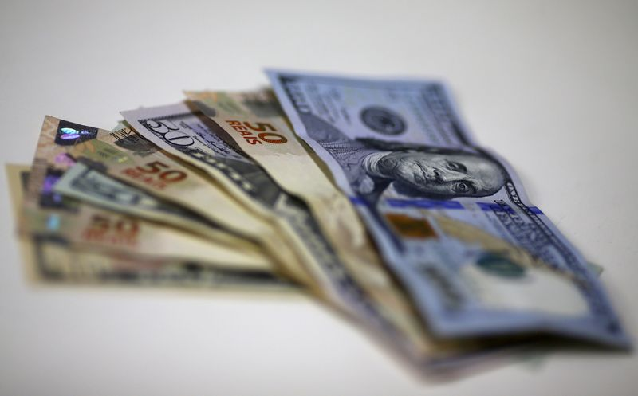

Brazil’s real rallies, eyes longest winning streak since November
BRASILIA (Reuters) – Brazil’s real rallied more than 1% on Friday, heading for its strongest close against the dollar in almost a month after the central bank intervened in the foreign exchange market selling $1.75 billion with repurchase agreements.
The real was on track for its fourth daily gain against the U.S. currency, marking its longest winning streak since early November last year.
The sales of $750 million in one auction and $1 billion in another were the latest in a series of interventions by the central bank in recent weeks, which have also included FX swaps auctions and outright dollar sales on the spot market.
After the central bank kicked off its interest rate hiking cycle on Wednesday with a stronger-than-expected 75 basis points increase to 2.75%, the real’s sluggish upswing gathered momentum on Friday.
'The central bank has been aggressively selling dollars and they made a big change in rates.This should be the focus for any investment strategy from now on,' a senior trader at a bank in Sao Paulo said.
Around midday on Friday, the real was up 1.3% at 5.4935 per dollar, putting the greenback on course for its first close below 5.50 reais since Feb.24.
The central bank’s two dollar auctions with repurchase agreements on Friday will roll over previous repo agreements due to expire on April 5, the central bank said.
So far this year, the central bank has also sold over $8 billion in FX swaps contracts and more than $6.5 billion from its FX reserves on the spot market.Most of that has been in the last month.
(Reporting by Jamie McGeever; editing by Barbara Lewis)
Posted On: 2021-03-19T00:00:00
Posted By: Jamie McGeever

Content Date: 2021-03-19
Download Date: 2021-04-17
Document ID: L0C04A756